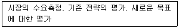
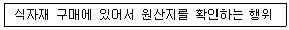
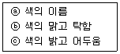
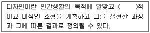
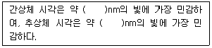
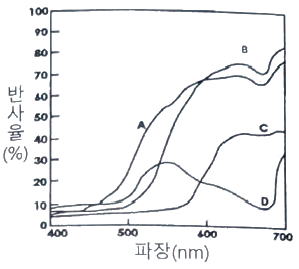
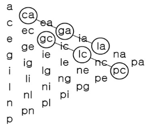

컬러리스트기사 (2021-03-07 기출문제)
1과목: 색채심리 마케팅
1. 마케팅 전략 수집 절차에서 다음에 해당하는 영역은?

- 상황분석
- 목표설정
- 전략수립
- 실행계획
(정답률: 30%)

2. SD법(Semantic Differential Method)에서 사용되는 형용사의 배열의 올바른 예시는?
- 크다 - 작다
- 아름다운 - 시원한
- 커다란 - 슬픈
- 맑은 – 늙은
(정답률: 92%)
3. 색채 마케팅 전략을 수립하기 위한 마케팅 믹스의 기본요소에 속하지 않는 것은?
- 제품(product)
- 위치(position)
- 촉진(promotion)
- 가격(price)
(정답률: 86%)
4. 심리학자들에 의한 색채와 음향에 관한 연구결과를 설명한 것 중 틀린 것은?
- 낮은 소리는 어두운 색을 연상시킨다.
- 예리한 소리는 순색에 가까운 밝고 선명한 색을 연상시킨다.
- 플루트(flute)의 음색에 대한 연상 색상은 다양하게 나타났지만 라이트 톤에 집중되는 경향이 있다.
- 느린 음은 대체로 노랑을, 높은 음은 낮은 채도의 색을 연상시킨다.
(정답률: 85%)
5. 표적마케팅의 3단계 순서가 옳은 것은?
- 시장 표적화 → 시장 세분화 → 시장의 위치 선정
- 시장 세분화 → 시장 표적화 → 시장의 위치 선정
- 시장의 위치 선정 → 시장 표적화 → 시장 세분화
- 틈새 시장분석 → 시장 세분화 → 시장의 위치 선정
(정답률: 58%)
6. 색채시장조사의 과정에서 컬러 코드(color code)가 설정되는 단계는?
- 콘셉트 확인 단계
- 조사방침 결정단계
- 정보 수집단계
- 정보 분류·분석단계
(정답률: 33%)
7. 색채 마케팅 전략 중 표적시장 선택의 시장공략 설명으로 틀린 것은?
- 무차별적 마케팅 – 세분시장 사이의 차이를 무시하고 한 개의 제품으로 전체시장을 공략
- 차별적 마케팅 – 표적 시장을 선정하고 적합한 제품을 생산하여 판매
- 집중 마케팅 – 소수의 세분시장에서 시장점유율을 높이기 위한 전략
- 브랜드 마케팅 – 브랜드 이미지 통합 전략
(정답률: 41%)
8. 매슬로우(Maslow)의 욕구 단계 중 다음에 해당되는 것은?

- 생리적 욕구
- 안전욕구
- 사회적 욕구
- 자아실현의 욕구
(정답률: 79%)
9. 색채 시장조사의 자료수집 방법 중 관찰법에 대한 설명으로 틀린 것은?
- 조사의 신뢰도를 높이기 위해 소비자의 행동을 직접적으로 관찰하는 방법이다.
- 특정 지역의 유동인구를 분석하거나 시청률이나 시간, 집중도 등을 조사하는데 적절하다.
- 특정효과를 얻거나 비교를 통해 정확한 정보를 얻고자 할 때 사용하는 방법이다.
- 특정 색채의 기호도를 조사하는데 적절하다.
(정답률: 40%)
10. 기업의 경영마케팅전략 중 기업에 대한 이미지를 구체적으로 기억하게 해주는 대표적인 수단은?
- 기업의 CI(Corporate Identity)
- 기업의 외관 색채
- 기업의 인테리어 컬러
- 기업의 광고 색채
(정답률: 87%)
11. 중국에서 하늘에 제사를 지낼 때 황제가 입었던 옷의 색이며, 갈리아에서는 노예들이 입었던 옷의 색은?
- 하양
- 노랑
- 파랑
- 검정
(정답률: 34%)
12. 문화에 따른 색의 상징성이 틀린 것은?
- 불교에서 노랑은 신성시되는 종교색이다.
- 동양 문화권에서는 노랑을 겁쟁이 또는 배신자를 상징하는 색으로 연상한다.
- 가톨릭 성화 속 성모마리아의 청색망토로 파랑을 고귀한 색으로 연상한다.
- 북유럽에서는 초록인간(Green Man)신화로 초록을 영혼과 자연의 풍요로움으로 상징한다.
(정답률: 73%)
13. 시장세분화를 위한 생활유형연구를 중심으로 소비자의 컬러 소비 형태를 연구하고자 할 때 적합한 연구방법은?
- AIO
- SWOT
- VALS
- AIDMA
(정답률: 41%)
14. 프랑크 H. 만케의 색경험 피라미드 반응 단계 중 유행색을 설명하기 위한 배경으로 적절한 단계와 인간의 반응은?
- 2단계 : 집단무의식
- 3단계 : 의식적 상징화, 연상
- 4단계 : 문화적 영향과 매너리즘
- 5단계 : 시대사조, 패션, 스타일의 경향
(정답률: 58%)
15. 색채와 문화에 대한 설명 중 틀린 것은?
- 북구계 민족들은 연보라, 스카이블루, 에메랄드 그린 등 한색계열의 색을 선호한다.
- 흐린 날씨의 지역 사람들은 약한 난색계를 좋아한다.
- 에스키모인은 녹색계열과 한색계열 색을 선호한다.
- 라틴계 민족은 난색계의 색을 선호한다.
(정답률: 72%)
16. 시장 세분화(Market Segmentation)의 기준이 될 수 없는 요인은?
- 인구 통계적 특성
- 지리적 특성
- 역사적 특성
- 심리적 특성
(정답률: 60%)
17. 색채의 공감각적 특징을 옳게 연결한 것은?
- 비렌 – 빨강 - 육각형
- 카스텔 – 노랑 – E 음계
- 뉴턴 – 주황 – 라 음계
- 모리스 데리베레 – 보라 – 머스크향
(정답률: 54%)
18. 색채의 사회적 역할에 관한 설명 중 틀린 것은?
- 특정한 사회에서 통용되는 색에 대한 고정관념은 다를 수 있다.
- 사회가 고정되고 개인의 독립성이 뒤쳐진 사회에서는 색채가 다양하고 화려해지는 경향이 있다.
- 사회의 관습이나 권력에서 탈피하면 부수적으로 관련된 색채연상이나 색채금기로부터 자유로워질 수 있다.
- 사회 안에서 선택되는 색채의 선호도는 성별에 따른 차이뿐만 아니라 연령별로 다르게 나타난다.
(정답률: 83%)
19. 색채치료에 관한 사항 중 틀린 것은?
- 색채를 이용하여 물리적, 정신적인 영향으로 환자의 상태를 호전시키는 치료방법이다.
- 남색은 심신의 완화, 안정에 효과적이다.
- 보라색은 정신적 자극, 높은 창조성을 제공한다.
- 색의 고유한 파장과 진동은 인간의 신체조직에 영향을 미친다.
(정답률: 53%)
20. 제품 라이프 스타일 종류의 사이클 설명 중 옳은 것은?
- 패션(fashion)은 주기적으로 몇 차례 등장하여 인기를 얻다가 관심이 낮아지는 파형의 사이클을 나타낸다.
- 스타일(style)은 천천히 시작되어 점점 인기를 얻어 유지하다가 다시 천천히 쇠퇴하는 형상의 사이클을 나타낸다.
- 패드(fad)는 급격히 열광적으로 시장에서 받아들여지다가 곧바로 쇠퇴하는 사이클을 나타낸다.
- 클래식(classic)은 일부 계층에서만 받아들여져 유행하다 사라지는 형상의 사이클을 나타낸다.
(정답률: 65%)
2과목: 색채디자인
21. 색채디자인의 매체전략 방법과 거리가 먼 것은?
- 통일성(Identity)
- 근접성(Proximity)
- 주목성(Attention)
- 연상(Association)
(정답률: 44%)
22. 시대별 디자인의 방향에 대한 설명으로 거리가 먼 것은?
- 1830년대 : 부가장식으로서의 디자인
- 1930년대 : 사회적 기술로서의 디자인
- 1980년대 : 경영전략과 비즈니스로서의 디자인
- 1910년대 : 기능적 표준 형태로서의 디자인
(정답률: 48%)
23. 건축양식, 기둥형태 등의 뜻 혹은 제품디자인의 외관형성에 채용하는 것으로 시대와 지역에 따라 유행하는 특정한 양식으로 말하기도 하는 용어는?
- Trend
- Style
- Fashion
- Design
(정답률: 49%)
24. 디자인 요소인 색의 세 가지 속성을 설명 순서대로 바르게 나열한 것은?

- ⓐ 색조 ⓑ 명도 ⓒ 채도
- ⓐ 색상 ⓑ 채도 ⓒ 명도
- ⓐ 배색 ⓑ 채도 ⓒ 명도
- ⓐ 단색 ⓑ 명도 ⓒ 채도
(정답률: 79%)
25. 입체에 대한 설명으로 틀린 것은?
- 입체의 유형 중 적극적 입체는 확실하게 지각되는 형, 현실적인 형을 말한다.
- 순수입체는 모든 입체들의 기본요소가 되는 구, 원통 육면체 등 단순한 형이다.
- 두 면과 각도를 가진 방향으로 이동하거나 면의 회전에 의해서 생긴다.
- 넓이는 있지만 두께는 없고, 원근감과 질감을 표현할 수 있다.
(정답률: 58%)
26. 시각디자인의 커뮤니케이션 기능과 종류가 잘못 연결된 것은?
- 지시적 기능 – 화살표, 교통표지
- 설득적 기능 – 잡지광고, 포스터
- 상징적 기능 – 일러스트레이션, 패턴
- 기록적 기능 – 영화, 심벌마크
(정답률: 65%)
27. 디자인의 특성에 따른 색체에 관한 설명 중 틀린 것은?
- 패션 디자인에서 유행색은 사회, 경제, 문화적 요인을 고려한 유행 예측색과 일정기간 동안 많은 사람들이 선호하는 색으로 나눌 수 있다.
- 포장 디자인에서의 색채는 제품의 이미지 및 전체 분위기를 나타내는 중요한 역할을 한다.
- 제품 디자인은 다양한 소재의 집합체이며 그 다양한 소재는 같은 색채로 적용되는 것이 가장 효과적이다.
- 광고 디자인은 상품의 특성을 분명히 해주고 구매충동을 유발하는 색채의 적용이 필요하다.
(정답률: 71%)
28. 주조색과 강조색에 관한 설명 중 틀린 것은?
- 주조색이란 전체의 70% 이상을 차지하는 것으로 전체 색채효과를 좌우하는 역할을 한다.
- 주조색은 분야별로 선정방법이 동일하지 않고 다를 수 있다.
- 강조색이란 전체의 30% 이상을 차지하는 것으로 디자인 대상에 변화를 주는 역할을 한다.
- 강조색은 시각적인 강조나 면의 미적인 효과를 위해 사용한다.
(정답률: 65%)
29. 색채계획 시 고려할 조건 중 거리가 먼 것은?
- 기능성
- 심미성
- 공공성
- 형평성
(정답률: 68%)
30. 처음 점이 움직임을 시작한 위치에서 끝나는 위치까지의 거리를 가진 점의 궤적은?
- 점증
- 선
- 면
- 입체
(정답률: 73%)
31. 그린디자인의 디자인 방법이 아닌 것은?
- 재료의 순수성 및 호환성을 고려하여 디자인한다.
- 각각의 조립과 분해가 쉽도록 디자인한다.
- 재활용을 고려한 디자인으로 많은 노동력과 복잡한 공정이 요구된다.
- 폐기 시 재활용률이 높도록 표면처리 방법을 고안한다.
(정답률: 52%)
32. 산업이나 공예, 예술, 상업이 잘 협동하여 디자인의 규격화와 표준화를 실천한 디자인 사조는?
- 구성주의
- 독일공작연맹
- 미술공예운동
- 사실주의
(정답률: 59%)
33. 메이크업(make-up)을 하기 위한 가장 중요한 3대 관찰 요소는?
- 이목구비의 비율, 얼굴형, 얼굴의 입체 정도
- 시대유행, 의상과의 연관성, 헤어스타일과의 조화
- 비용, 고객의 미적 욕구, 보건 및 위생 상태
- 색의 균형, 피부의 질감, 얼굴의 형태
(정답률: 34%)
34. 근대 디자인의 역사에 대한 설명 중 틀린 것은?
- 독일공작연맹은 규격화를 통해 생산의 양증대를 긍정하면서 동시에 질 향상을 지향하였다.
- 미술공예운동은 수공예 부흥운동, 대량생산 시스템의 거부라는 시대 역행적 성격이 강하다.
- 곡선적 아르누보는 오스트리아 빈을 중심으로 발전하였다.
- 아르데코는 복고적 장식과 단순한 현대적 양식을 결합하여 대중화를 시도하였다.
(정답률: 39%)
35. 다음 ( )에 가장 적합한 말은?

- 자연
- 실용
- 환상
- 상징
(정답률: 70%)
36. 디자인 사조(思潮)에 대한 설명이 옳은 것은?
- 미술공예운동은 윌리엄 모리스의 노력에 힘입어 19세기 후반 예술성을 지향하는 몇몇 길드(guild)와 새로운 세대의 건축가, 공예 디자이너에 의해 성장하였다.
- 플럭서스(Fluxus)란 원래 낡은 가구를 주워 모아 새로운 가구를 만든다는 뜻으로 저속한 모방예술을 의미한다.
- 바우하우스(Bauhaus)는 신조형주의 운동으로서 개성을 배제하는 주지 주의적 추상미술운동이다.
- 다다이즘(Dadaism)의 화가들은 자연적 형태는 기하학적인 동일체의 방향으로 단순화시키거나 세련되게 할 수도 있다고 하였다.
(정답률: 57%)
37. 자극의 크기나 강도를 일정방향으로 조금씩 변화시켜 나가면서 그 각각 자극에 대하여 ‘크다/작다, 보인다/보이지 않는다.’ 등의 판단을 하는 색채디자인 평가방법은?
- 조정법
- 극한법
- 항상법
- 선택법
(정답률: 37%)
38. 에스니컬 디자인(ethnical design), 베네큘러 디자인(vernacular design)의 개념은 어떤 디자인의 조건을 충족시키기 위한 것으로 설명되는가?
- 합목적성
- 독창성
- 질서성
- 문화성
(정답률: 54%)
39. 흐름, 끊임없는 변화, 움직임을 뜻하는 라틴어로 1960년대에서 1970년대에 걸쳐 주로 독일의 여러 도시를 중심으로 일어난 국제적 전위예술운동은?
- 플럭서스
- 해체주의
- 페미니즘
- 포토리얼리즘
(정답률: 68%)
40. 개인의 개성과 호감이 가장 중요시 되는 분야는?
- 화장품의 색체디자인
- 주거공간의 색채디자인
- CIP의 색채디자인
- 교통표지판의 색채디자인
(정답률: 51%)
3과목: 색채관리
41. 자연주광 조명에서의 색비교에 대한 설명으로 잘못된 것은?
- 북반구에서의 주광은 북창을 통해서 확산된 광을 사용한다.
- 진한 색의 물체로부터 반사하지 않는 확산 주광을 이용해야 한다.
- 시료면의 범위보다 넓은 범위를 균일하게 조명해야 한다.
- 적어도 1,000 lx의 조도가 되어야 한다.
(정답률: 38%)
42. 색채계에 대한 설명으로 틀린 것은?
- 색채계란 색을 표시하는 수치를 측정하는 계측기를 뜻한다.
- 광전 수광기를 사용하여 종합 분광특성을 적절하게 조정한 색채계는 광전 색채계이다.
- 복사의 분광 분포를 파장의 함수로 측정하는 계측기는 분광 광도계이다.
- 시감에 의해 색 자극값을 측정하는 색채계를 시감 색채계라 한다.
(정답률: 38%)
43. 제시 조건이나 재질 등의 차이에 따라 변화를 보이는 주관적인 색의 현상은?
- 컬러 프로파일
- 컬러 캐스트
- 컬러 세퍼레이션
- 컬러 어피어런스
(정답률: 64%)
44. 광원에 대한 측정은 인간의 눈을 기준으로 이루어지는 것을 광측정이라 한다. 4가지 측정량에 해당되는 것은?
- 전광속, 선명도, 휘도, 광도
- 전광속, 색도, 휘도, 광도
- 전광속, 광택도, 휘도, 광도
- 전광속, 조도, 휘도, 광도
(정답률: 63%)
45. 표면색의 시감 비교 방법으로 틀린 것은?
- KS A 0065로 정의되어 있다.
- 정상 색각인 관찰자를 필요로 한다.
- 자연주광 혹은 인공광원에서 비교를 실시한다.
- 인공의 평균 주광으로 D50은 사용할 수 없다.
(정답률: 46%)
46. 가소성 물질이며, 광택이 좋고 다양한 색채를 낼 수 있도록 착색이 가능하며 투명도가 높고 굴절율은 유리보다 낮은 소재는?
- 플라스틱
- 금속
- 천연섬유
- 알루미늄
(정답률: 70%)
47. 입력 색역에서 표현된 색이 출력 색역에서 재현 불가할 때 ICC에서 규정한 렌더링 의도에 대한 설명으로 잘못된 것은?
- 지각적(perceptual) 렌더링은 전체 색간의 관계는 유지하면서 출력 색역으로 색을 압축한다.
- 채도(saturation) 렌더링은 입력측의 채도가 높은 색을 출력에서도 채도가 높은 색으로 변환한다.
- 상대색도(relative colorimetric) 렌더링은 입력의 흰색을 출력의 흰색으로 매핑하며, 전체 색간의 관계를 유지하면서 출력색역으로 색을 압축한다.
- 절대색도(absolute colorimetric) 렌더링은 입력의 흰색을 출력의 흰색으로 매핑하지 않는다.
(정답률: 34%)
48. 대상에 따라 구분해서 사용하는 경면 광택도 측정에 대한 설명이 틀린 것은?
- 85° 경면 광택도 : 종이, 섬유 등 광택이 거의 없는 대상에 적용
- 75° 경면 광택도 : 도장면, 타일, 법랑 등 일반적 대상물의 측정
- 60° 경면 광택도 : 광택범위가 넓은 범위를 측정하는 경우에 적용
- 20° 경면 광택도 : 비교적 광택도가 높은 도장면이나 금속면끼리의 비교
(정답률: 43%)
49. 조건등색지수(MI)를 구하려 한다. 2개의 시료가 기준광으로 조명 되었을 때 완전히 같은 색이 아닐 경우의 보정 방법은?
- 기준광으로 조명되었을 EO의 삼자극치(Xr1, Yr1, Zr1) 를 보정한다.
- 시험광(t)으로 조명되었을 때의 삼자극치(Xt2, Yt2, Zt2)를 보정한다.
- 기준광(r)과 시험광(t)으로 조명되었을 때의 각각의 삼자극치를 모두 보정한다.
- 보정은 필요 없고, MI만 기록한다.
(정답률: 40%)
50. 분광 반사율에 대한 설명으로 옳은 것은?
- 동일 조건으로 조명하여 한정된 동일 입체각내의 물체에서 반사하는 복사속과 완전 확산 반사면에서 반사하는 복사속의 비율
- 동일조건으로 조명 및 관측한 물체의 파장에 있어서 분광 복사 휘도와 완전 확산 반사면의 비율
- 물체에서 반사하는 파장의 분광 복사속과 물체에 입사하는 파장의 분광 복사속의 비율
- 입사한 복사를 모든 방향에 동일한 복사 휘도로 반사한 비율
(정답률: 28%)
51. 염료와 안료에 대한 설명으로 틀린 것은?
- 일반적으로 염료는 수용성, 안료는 비수용성이다.
- 일반적으로 염료는 유기성, 안료는 무기성이다.
- 불투명한 채색을 얻고자 하는 경우 안료를 사용하고, 투명도를 원할 때는 염료를 사용한다.
- 불투명하게 플라스틱을 채색하고자 할 때는 안료와 플라스틱 사이의 굴절률 차이를 작게 해야 한다.
(정답률: 31%)
52. ISO 3664 컬러 관측 기준에 대한 설명으로 틀린 것은?
- 분광분포는 CIE 표준광 D50을 기준으로 한다.
- 반사물에 대한 균일도는 60% 이상, 1200lux 이상이어야 한다.
- 투사체에 대한 균일도는 75% 이상, 1270cd/m2 이상이어야 한다.
- 10%에서 60%사이의 반사율을 가진 무채색 유광 배경이 요구된다.
(정답률: 36%)
53. 천연 수지 도료에 대한 설명 중 틀린 것은?
- 케슈계 도료는 비교적 저렴하다.
- 주정 에나멜은 수지를 알코올에 용해하여 안료를 가한다.
- 셀락 니스와 속건 니스는 도막이 매우 강하다.
- 유성 에나멜은 보일유를 전색제로 하는 도료이다.
(정답률: 33%)
54. 시각에 관한 용어와 설명이 바르게 연결된 것은?
- 가독성 – 대상물의 존재 또는 모양의 보기 쉬움 정도
- 박명시 – 명소시와 암소시의 중간 밝기에서 추상체와 간상체 양쪽이 움직이고 있는 시각의 상태
- 자극역 – 2가지 자극이 구별되어 지가되기 위하여 필요한 자극 척도상의 최소의 차이
- 동시대비 – 시간적으로 근접하여 나타나는 2가지 색을 차례로 볼 때에 일어나는 색 대비
(정답률: 45%)
55. 디지털 프린터의 디더링 기법에 대한 설명으로 틀린 것은?
- AM 스크리닝은 닷의 위치는 그대로 두고 크기를 변화시킨다.
- FM 스크리닝은 닷 배치는 불규칙적으로 보이도록 이루어진다.
- 스토캐스틱 스크리닝은 AM 스크리닝 기법이다.
- 에러 디퓨전은 FM 스크리닝 기법이다.
(정답률: 31%)
56. 메타메리즘에 관한 설명으로 틀린 것은?
- 메타메리즘이 나타나는 경우 광원이 바뀌면서 색채가 얼마나 차이가 나는지 알려주는 지수를 메타메리즘 지수라고 한다.
- CCM을 하는 경우에는 아이소메릭 매칭을 한다.
- 육안으로 조색하는 경우 메타메릭 매칭을 한다.
- 분광반사율 자체를 일치하게 하여도 관측자에 따라 메타메리즘 현상이 일어나는 경우가 있다.
(정답률: 26%)
57. ICC 기반 색채관리시스템에 대한 설명으로 틀린 것은?
- CIEXYZ 또는 CIELAB을 PCS로 사용한다.
- 색채변환을 위해서 항상 입력과 출력 프로파일이 필요하지는 않다.
- 운영체제에서 특정 CMM을 선택하는 것은 가능하다.
- CIELAB의 지각적 불균형 문제를 CMM에서 보완할 수 있다.
(정답률: 50%)
58. 먼셀의 색채개념인 색상, 명도, 채도와 유사한 구조의 디지털 색채 시스템은?
- CMYK
- HSL
- RGB
- LAB
(정답률: 37%)
59. 색채를 효과적으로 재현하기 위해 다른 과정보다 우선되어야 하는 것은?
- 재현하려는 표준 표본의 색채 소재(도료, 염료 등) 특성 파악
- 재현하려는 표준 표본의 측색을 바탕으로한 색채 정량화
- 색채 재현을 위한 원색의 조합비율 구성
- 색채 재현을 위해 사용하는 컬러런트의 성분 파악
(정답률: 29%)
60. 안료의 특징으로 옳은 것은?
- 채색 후에 물이나 습기에 노출되면 색이 보존되지 않는다.
- 물이나 착색과정의 용제(溶薺)에 의해 단일분자로 녹는다.
- 착색하고자 하는 매질에 용해되지 않는다.
- 피염제의 종류, 색료의 종류, 흡착력 등에 따라 착색 방법이 달라진다.
(정답률: 47%)
4과목: 색채지각론
61. 정육점에서 사용된 붉은 색 조명이 고기를 신선하게 보이도록 하는 현상은?
- 분광반사
- 연색성
- 조건등색
- 스펙트럼
(정답률: 55%)
62. 인쇄에서의 혼색에 대한 설명으로 틀린 것은?
- 망점인쇄에서는 잉크가 중복인쇄로서 필요에 따라 겹쳐지기 때문에 감법혼색의 상태를 나타낸다.
- 잉크량을 절약하기 위해 백색 잉크를 사용해 4원색을 원색으로서 중복 인쇄한다.
- 각 잉크의 망점 크기나 위치가 엇갈리므로 병치 가법의 혼색 상태도 나타난다.
- 망점 인쇄에서는 감법혼색과 병치 가법혼색이 혼재된 혼색이다.
(정답률: 56%)
63. 베졸드(Bezold)효과에 대한 설명으로 틀린 것은?
- 배경에 비해 줄무늬가 가늘고, 그 간격이 좁을수록 효과적이다.
- 어느 영역의 색이 그 주위색의 영향을 받아 주위색에 근접하게 변화하는 효과이다.
- 배경색과 도형색의 명도와 색상차이가 적을수록 효과가 뚜렷하다.
- 음성적 잔상의 원리를 적용한 효과이다.
(정답률: 31%)
64. 다음 ( )에 들어갈 내용으로 알맞게 짝지어진 것은?

- 400, 450
- 500, 560
- 400, 550
- 500, 660
(정답률: 49%)
65. 저녁노을이 붉게 보이는 것은 빛의 어떤 현상 때문인가?
- 반사
- 굴절
- 간섭
- 산란
(정답률: 65%)
66. 조명광의 혼색이나, 테레비전 또는 컴퓨터 모니터의 혼색에 해당되는 것은?
- 가법혼색
- 감법혼색
- 중간혼색
- 회전혼색
(정답률: 60%)
67. 색의 3속성 중 대상물과 바탕색과의 관계에서 시인성에 영향을 주는 순서를 바르게 나열한 것은?
- 채도차 → 색상차 → 명도차
- 색상차 → 채도차 → 명도차
- 채도차 → 명도차 → 색상차
- 명도차 → 채도차 → 색상차
(정답률: 40%)
68. 색채의 경연감에 관한 설명이 틀린 것은?
- 밝고 채도가 낮은 난색은 부드러운 느낌을 준다.
- 색채의 경연감은 주로 명도와 관련이 있다.
- 채도가 높은 한색은 딱딱한 느낌을 준다.
- 어두운 한색은 딱딱한 느낌을 준다.
(정답률: 40%)
69. 다음 곡선 중에서 양배추의 분광반사율을 나타내는 것은?

- A
- B
- C
- D
(정답률: 32%)
70. 다음 중 병치 혼색이 아닌 것은?
- 인상파 화가의 점묘화
- 컬러 인쇄의 망점
- 직물에서의 베졸드 효과
- 빠르게 도는 색팽이의 색
(정답률: 55%)
71. 푸르킨예 현상에 대한 설명 중 옳은 것은?
- 조명이 점차 어두워지면 빨간색이 다른 색보다 먼저 영향을 받는다.
- 암소시에서 명소시로 이동할 때 생기는 지각현상을 말한다.
- 낮에는 빨간 사과가 밤이 되면 밝은 회색으로 보인다.
- 어두운 곳에서의 명시도를 높이기 위해서는 초록색보다는 주황색이 유리하다.
(정답률: 34%)
72. 색채에 대한 느낌을 가장 옳게 설명한 것은?(오류 신고가 접수된 문제입니다. 반드시 정답과 해설을 확인하시기 바랍니다.)
- 빨강, 주황, 노랑 등의 색상은 경쾌하고 시원함을 느끼게 한다.
- 장파장 계통의 색은 시간의 경과가 느리게 느껴지고, 단파장 계통의 색은 시간의 경과가 빠르게 느껴진다.
- 한색계열의 저채도 색은 심리적으로 마음이 가라앉는 느낌을 준다.
- 색의 중량감은 주로 채도에 의하여 좌우된다.
(정답률: 42%)
73. 물체에 적용 시 가장 작아 보이는 색은?
- 채도가 높은 주황색
- 밝은 노란색
- 명도가 낮은 파란색
- 채도가 높은 연두색
(정답률: 60%)
74. 노트르담 대성당의 스테인드글라스 제작기법에서, 원색으로 이루어진 바탕 그림 사이에 검은색 띠를 두른 것을 발견하게 되는데 이는 어떤 대비를 약화시키려는 시각적 보정작업인가?
- 색상대비
- 연변대비
- 명도대비
- 한난대비
(정답률: 52%)
75. 색채의 감정효과 중 리프만 효과(Liebmann’s effect)와 관련이 높은 것은?
- 경연감
- 온도감
- 명시성
- 주목성
(정답률: 40%)
76. 두 개 이상의 색필터 또는 색광을 혼합하여 다른 색채감각을 일으키는 것은?
- 색의 지각
- 색의 혼합
- 색의 순응
- 색의 파장
(정답률: 54%)
77. 작은 면적의 회색이 채도가 높은 유채색으로 둘러싸일 때 회색이 유채색의 보색 색상을 띠어 보이는 것은?
- 색음현상
- 애브니 효과
- 피프만 효과
- 기능적 색채
(정답률: 46%)
78. 유채색 지각과 관련된 광수용기는?
- 간상체
- 추상체
- 중심와
- 맹점
(정답률: 54%)
79. 감법혼색을 응용하는 것이 아닌 것은?
- 컬러 TV
- 컬러 슬라이드
- 컬러 영화필름
- 컬러 인화사진
(정답률: 61%)
80. 도로 안내 표지를 디자인할 때 가장 중점을 두어야 하는 것은?
- 배경색과 글씨의 보색대비 효과를 고려한다.
- 배경색과 글씨의 명도차를 고려한다.
- 배경색과 글씨의 색상차를 고려한다.
- 배경색과 글씨의 채도차를 고려한다.
(정답률: 38%)
5과목: 색채체계론
81. 문·스펜서(Moon·Spencer)의 색채조화론 중 색상이나 명도, 채도의 차이가 아주 가까운 애매한 배색으로 불쾌감을 주는 범위는?
- 유사조화
- 눈부심
- 제1부조화
- 제2부조화
(정답률: 41%)
82. 먼셀 색체계를 규정한 한국산업표준은?
- KS A 0011
- KS A 0062
- KS A 0074
- KS A 0084
(정답률: 42%)
83. ISCC-NIST의 색기호에서 색상과 약호의 연결이 틀린 것은?
- RED - R
- OLIVE - O
- BROWN - BR
- PURPLE – P
(정답률: 63%)
84. 다음 중 한국의 전통색명인 벽람색(碧藍色)이 해당하는 색은?
- 밝은 남색
- 연한 남색
- 어두운 남색
- 진한 남색
(정답률: 34%)
85. NCS 색체계의 S2030-Y90R 색상에 대한 옳은 설명은?
- 90%의 노란색도를 지니고 있는 빨간색
- 노란색도 20%, 빨간색도 30%를 지니고 있는 주황색
- 90%의 빨간색도를 지니고 있는 노란색
- 빨간색도 20%, 노란색도 30%를 지니고 있는 주황색
(정답률: 61%)
86. NCS 색체계의 설명 중 틀린 것은?
- NCS 표기법으로 모든 가능한 물체의 표면색을 표시할 수 있다.
- 색상삼각형의 한 색상은 섬세한 차이의 다른 검정색도와 유채색도에 의해서 변화된다.
- 노르웨이, 스페인, 스웨덴의 국가 표준색을 제정하는 데 기여하였다.
- 업계 간 원활한 컬러 커뮤니케이션을 위해 Trend Color를 포함한다.
(정답률: 46%)
87. 다음 중 국제표준 색체계가 아닌 것은?
- Munsell
- CIE
- NCS
- PCCS
(정답률: 48%)
88. DIN 색체계와 가장 유사한 색상 구조를 갖는 색체계는?
- Munsell
- NCS
- Yxy
- Ostwald
(정답률: 39%)
89. 먼셀 색체계의 기본 5색상이 아닌 것은?
- 연두
- 보라
- 파랑
- 노랑
(정답률: 64%)
90. 혼색계 시스템의 이론에 기초를 둔 연구를 한 학자들로 나열된 것은?
- 토마스 영, 헤링, 괴테
- 토마스 영, 헬름홀츠, 맥스웰
- 슈브롤, 헬름홀츠, 맥스웰
- 토마스 영, 슈브롤, 비렌
(정답률: 49%)
91. 오스트발트 색입체의 특징으로 틀린 것은?
- 시지각적으로 색상이 등간격으로 분포하지 않는다.
- 순색의 백색량, 순색량은 색상마다 같다.
- 모든 색상의 순색은 색입체 상에서 동일한 위치에 있다.
- 등순계열의 색은 흑색량과 순색량이 같다.
(정답률: 24%)
92. 우리의 음양오행사상에 의한 색체계는 오방정색과 오방간색으로 분류하는데 다음 중 오방간색이 아닌 것은?
- 청색
- 홍색
- 유황색
- 자색
(정답률: 40%)
93. CIE 색체계의 특성이 아닌 것은?
- 동일 색상을 찾기 쉬워 색채 계획 시 유용하다.
- 인쇄로 표현할 수 있는 색의 범위가 한정적이다.
- 색을 과학적이고 객관성 있게 지시할 수 있다.
- 최종 좌표 값들의 활용에 있어 인간의 색채시감과 거리가 있다.
(정답률: 21%)
94. CIE 색체계의 색공간 읽는 법에 대한 설명이 틀린 것은?
- Yxy에서 Y는 색의 밝기를 의미한다.
- L*a*b*에서 L*는 인간의 시감과 같은 명도를 의미한다.
- L*C*h에서 C*는 색상의 종류, 즉 Color를 의미한다.
- L*u*v*에서 u*와 v*는 두 개의 채도 축을 표현한다.
(정답률: 46%)
95. PCCS 색체계에 대한 설명으로 옳은 것은?
- 일반교육 및 미술교육 등 색채교육용 표준체계로 색채관리 및 조색을 과학적으로 정확히 전달하기에 적합한 색체계이다.
- R, Y, G, B, P의 5색상을 색영역의 중심으로 하고, 각 색의 심리보색을 대응시켜 10색상을 기본색상으로 한다.
- 명도의 표준은 흰색과 검은색 사이를 정량적으로 분활한다.
- 채도의 기준은 지각적 등보성이 없이 절대수치인 9단계로 모든 색을 구성하였다.
(정답률: 27%)
96. CIE L*u*v* 색좌표에 대한 설명이 틀린 것은?
- L*은 명도차원이다.
- u*와 v*는 색상축을 표현한다.
- u*는 노랑 – 파랑 축이다.
- v*는 빨강 – 초록 축이다.
(정답률: 46%)
97. 먼셀 색체계의 색채표기법으로 옳은 것은?
- 19:pB
- 2.5PB 4/10
- Y90R
- 2eg
(정답률: 56%)
98. 관용색명과 일반색명의 설명으로 틀린 것은?
- 관용색명은 옛날부터 전해 내려오는 습관상으로 사용하는 색 하나하나의 고유색명이라 정의할 수 있다.
- 관용색명에는 동물 및 식물, 광물 등의 이름에서 따온 것들이 있다.
- 일반색명은 계통색명이라고 하며, 감성적인 표현의 방법이라 할 수 있다.
- ISCC-NIST 색명법은 미국에서 공동으로 제정한 색명법으로 일반색명이라 할 수 있다.
(정답률: 53%)
99. 아래 그림의 오스트발트 색채체계에서 보여지는 조화로 맞는 것은?

- 등백 계열의 조화
- 등혹 계열의 조화
- 등순 계열의 조화
- 등가색환 계열의 조화
(정답률: 43%)
100. 슈브뢸(M. E. Chevreul)의 색채조화론에 대한 설명으로 옳은 것은?
- 색의 조화와 대비의 법칙을 사용한다.
- 조화는 질서와 같다.
- 동일 색상이 조화가 좋다.
- 순색, 흰색, 검정을 결합하여 4종류의 색을 만든다.
(정답률: 33%)